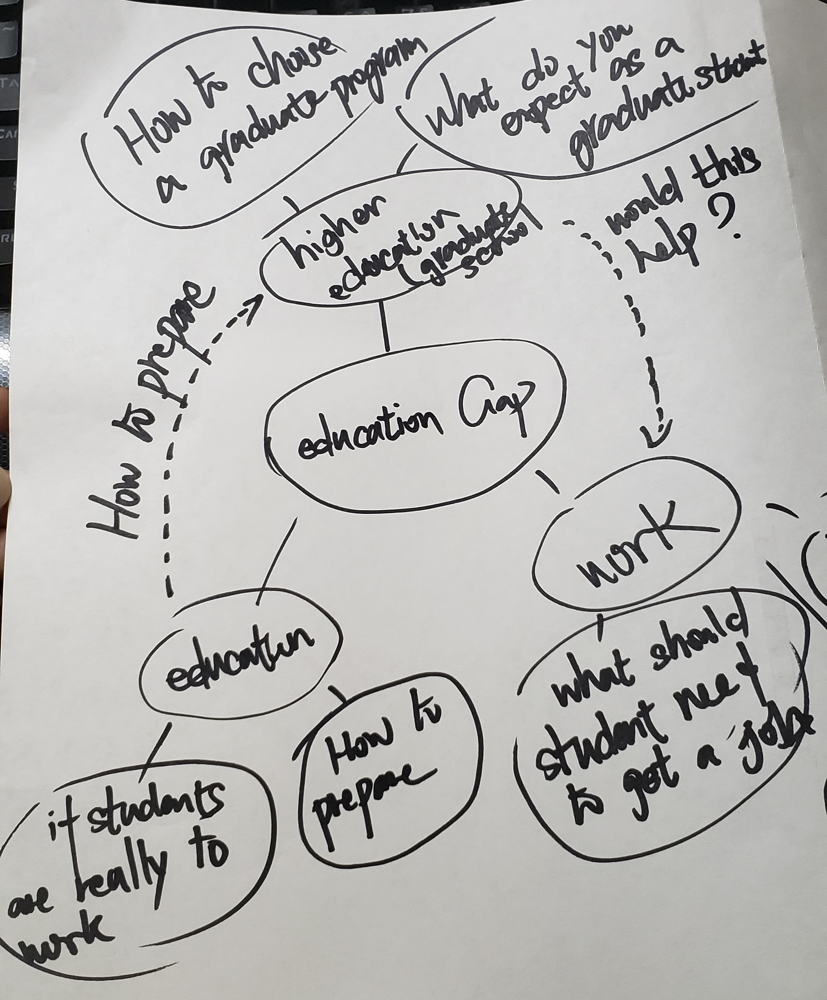

Dichotomy: Oversea Chinese Versus Taishanese
My topic is about the education gap. After brainstorming, I found that there are 3 branches about the education gap: career, education and higher education. The process of brainstorm is beneficial when I am not sure how I am developing my project because this process let me think about more what is the connection between different branches.
The idea most interesting to pursue is that is there any better way to help students to have better job opportunities. This process leads me to realize there are many problems, but there are only very few problems I would be interested in. After doing the brainstorming, I feel I would be more likely to choose a topic that would be good for this project.s
